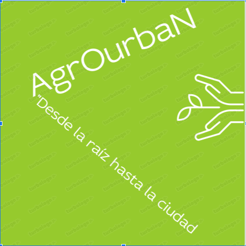

AgRoUrbaN es una plataforma digital que conecta directamente a productores agrícolas con consumidores urbanos, fabricantes y comerciantes del sector agroalimentario.
Promovemos la sostenibilidad, la transparencia y el comercio justo. Nuestra misión es acortar la cadena de suministro y fortalecer el vínculo entre el campo y la ciudad mediante soluciones digitales que impulsan la economía rural.
Apoyamos prácticas agrícolas responsables y ecológicas.
Garantizamos la trazabilidad de cada producto desde el campo hasta la ciudad.
Usamos tecnología para conectar comunidades rurales y urbanas.